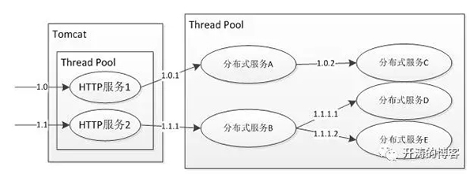
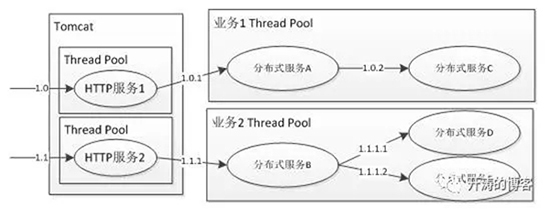

- Hystrix简介
Hystrix是Netflix开源的一款针对分布式系统的延迟和容错库，目的是用来隔离分布式服 务故障。它提供线程和信号量隔离，以减少不同服务之间资源竞争带来的相互影响;提供 优雅降级机制;提供熔断机制使得服务可以快速失败，而不是一直阻塞等待服务响应，并能 从中快速恢复。Hystrix通过这些机制来阻止级联失败并保证系统弹性、可用。下图是一 个典型的分布式服务实现。
 分布式服务实现
首先，当大多数人在使用Tomcat时，多个HTTP服务会共享一个线程池，假设其中一个HTTP服 务访问的数据库响应非常慢，这将造成服务响应时间延迟增加，大多数线程阻塞等待数据 响应返回，导致整个Tomcat线程池都被该服务占用，甚至拖垮整个Tomcat。因此，如果我们 能把不同HTTP服务隔离到不同的线程池，则某个HTTP服务的线程池满了也不会对其他服务 造成灾难性故障。这就需要线程隔离或者信号量隔离来实现了。
使用线程隔离或信号隔离的目的是为不同的服务分配一定的资源，当自己的资源用完，直 接返回失败而不是占用别人的资源。
同理，如“HTTP服务1”和“HTTP服务2”要分别访问远程的“分布式服务A”和“分布式服务B”， 假设它们共享线程池，那么其中一个服务在出现问题时也会影响到另一个服务，因此，我们 需要进行访问隔离，可以通过Hystrix的线程池隔离或信号量隔离来实现。
其次，“分布式服务B”依赖了“分布式服务D”和“分布式服务E”，其中“分布式服务D”是一个 可降级的服务，意思是出现故障时(如超时、网络故障)可以暂时屏蔽掉或者返回缓存脏数 据，如访问商品详情页时，可以暂时屏蔽掉上边的商家信息，不会影响用户下单流程。
当我们依赖的服务访问超时时，要提供降级策略。比如，返回托底数据阻止级联故障。当 因为一些故障(如网络故障)使得服务可用率下降时，要能及时熔断，一是快速失败，二是可 以保护远程分布式服务。
到此我们大体了解了Hystrix是用来解决什么问题的。
限制调用分布式服务的资源使用，某一个调用的服务出现问题不会影响其他服务调用，通 过线程池隔离和信号量隔离实现。Hystrix提供了优雅降级机制：超时降级、资源不足时 (线程或信号量)降级，降级后可以配合降级接口返回托底数据。Hystrix也提供了熔断器 实现，当失败率达到阀值自动触发降级(如因网络故障/超时造成的失败率高)，熔断器触发 的快速失败会进行快速恢复。还提供了请求缓存、请求合并实现。 接下来，我们来看下如何使用Hystrix，本书使用的版本是Hystrix- 1.5.6。
- 隔离示例
以线程池隔离为示例，会为不同的服务设置不同的线程池，从而实现相互隔离。 
线程池隔离
为不同的HTTP服务设置不同的线程池，为不同的分布式服务调用设置不同的线程池。
假设我们现在要调用一个获取库存服务，通过封装一个命令GetStockServiceCommand来实现。
public class GetStockServiceCommand extends HystrixCommand<String> {
private StockService stockService;
public GetStockServiceCommand() {
super(setter());
}
private static Setter setter() {
//服务分组
HystrixCommandGroupKey groupKey = HystrixCommandGroupKey.Factory. asKey("stock");
//服务标识
HystrixCommandKey commandKey =HystrixCommandKey.Factory. asKey("getStock");
//线程池名称
HystrixThreadPoolKey threadPoolKey = HystrixThreadPoolKey.Factory. asKey("stock-pool");
//线程池配置
HystrixThreadPoolProperties.Setter threadPoolProperties =HystrixThreadPoolProperties.Setter threadPoolProperties =HystrixThreadPoolProperties.Setter()
.withCoreSize(10)
.withKeepAliveTimeMinutes(5)
.withMaxQueueSize(Integer.MAX_VALUE)
.withQueueSizeRejectionThreshold(10000);
//命令属性配置
HystrixCommandProperties.Setter commandProperties = HystrixCommandProperties.Setter()
.withExecutionIsolationStrategy(HystrixCommandProperties.ExecutionIsolationStrategy.THREAD);
return HystrixCommand.Setter
.withGroupKey(groupKey)
.andCommandKey(commandKey)
.andThreadPoolKey(threadPoolKey)
.andThreadPoolPropertiesDefaults(threadPoolProperties)
.andCommandPropertiesDefaults(commandProperties);
}
@Override
protectedString run() throws Exception {
return stockService.getStock();
}
}
几个重要组件如下。
- =HystrixCommandGroupKey=：配置全局唯一标识服务分组的名称，比如，库存系统就是一个 服务分组。当我们监控时，相同分组的服务会聚合在一起，必填选项。
- =HystrixCommandKey=：配置全局唯一标识服务的名称，比如，库存系统有一个获取库存服务， 那么就可以为这个服务起一个名字来唯一识别该服务，如果不配置，则默认是简单类名。
- =HystrixThreadPoolKey=：配置全局唯一标识线程池的名称，相同线程池名称的线程池是同一个， 如果不配置，则默认是分组名，此名字也是线程池中线程名字的前缀。
- =HystrixThreadPoolProperties=：配置线程池参数，coreSize配置核心线程池大小和线程 池最大大小，keepAliveTimeMinutes是线程池中空闲线程生存时间(如果不进行动态配置 ，那么是没有任何作用的)，maxQueueSize配置线程池队列最大大小，queueSizeRejection Threshold限定当前队列大小，即实际队列大小由这个参数决定，通过改变queueSizeReje ctionThreshold可以实现动态队列大小调整。
- =HystrixCommandProperties=：配置该命令的一些参数，如executionIsolationStrategy 配置执行隔离策略，默认是使用线程隔离，此处我们配置为THREAD，即线程池隔离。此处可 以粗粒度实现隔离，也可以细粒度实现隔离，如下所示。
- =服务分组+线程池=：粗粒度实现，一个服务分组/系统配置一个隔离线程池即可，不配置线 程池名称或者相同分组的线程池名称配置为一样。
- =服务分组+服务+线程池=：细粒度实现，一个服务分组中的每一个服务配置一个隔离线程池， 为不同的命令实现配置不同的线程池名称即可。
- =混合实现=：一个服务分组配置一个隔离线程池，然后对重要服务单独设置隔离线程池。
如上配置是在应用启动时就配置好了，在实际运行过程中，我们可能随时调整其中一些参数， 如线程池大小、队列大小，此时，可以使用如下方式进行动态配置。
String dynamicQueueSizeRejectionThreshold = "hystrix.threadpool."+ "stock-pool" + ".queueSizeRejectionThreshold"; Configuration configuration = ConfigurationManager.getConfigInstance(); configuration.setProperty(dynamicQueueSizeRejectionThreshold,100);
如果是改变线程池配置，则是
"hystrix.threadpool."+ threadPoolKey + propertyName;
如果是改变命令属性配置，则是
"hystrix.command." + commandKey + propertyName。
接下来就可以通过如下方式创建命令。
GetStockServiceCommand command = new GetStockServiceCommand(newStockService());
然后通过如下方式同步调用。
String result = command.execute();
或者返回Future从而实现异步调用。
Future<String> future = command.queue();
或者配合RxJava实现响应式编程。
Observable<String> observe =command.observe();
observe.asObservable().subscribe((result) -> {
System.out.println(result);
});
在应用Hystrix时，首先需要把服务封装成HystrixCommand，即命令模式实现，然后就可以 通过同步/异步/响应式模式来调用服务。
信号量隔离通过如下配置即可。
HystrixCommandProperties.Setter commandProperties= HystrixCommandProperties.Setter()
.withExecutionIsolationStrategy(HystrixCommandProperties.ExecutionIsolationStrategy.SEMAPHORE)
.withExecutionIsolationSemaphoreMaxConcurrentRequests(50);
信号量隔离只是限制了总的并发数，服务使用主线程进行同步调用，即没有线程池。因此 ，如果只是想限制某个服务的总并发调用量或者调用的服务不涉及远程调用的话，可以使 用轻量级的信号量来实现。
GetStockServiceCommand
不是单例，不能重用，必须每次使用创建一个。如果觉得 Hystrix
太麻烦或者太重，则可以参考Hystrix思路设计自己的组件。